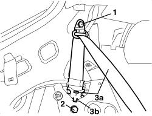
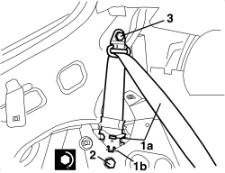

7065B10 REAR SEAT BELT (ONE), LEFT OR RIGHT - R.R.
- Path
- Procedures > 70 FITTINGS > 7065 SEAT BELTS AND ACCESSORIES > 7065B REAR SEAT BELTS > 7065B10 REAR SEAT BELT (ONE), LEFT OR RIGHT - R.R.
- Kind
- repair procedure (removal / refitting; the operation number is the code)
- Applies to
- all engines; all production periods
- Interactive page
- https://sloeber94.github.io/elrnDB-aBrrSpdr/en/#/946002694
Applies to: all engines; all production periods
 Removing
Removing
 Refitting
Refitting- Remove the rear parcel shelf.
Op. 7040G30 BOOT LIGHT BULB HOLDER - R.R.
Op. 7050A22 REAR SEAT CUSHION - R+R
Op. 7040H42 REAR PILLAR TRIM (ONE), LEFT OR RIGHT- R.R
Op. 7040B22 LUGGAGE COMPARTMENT/LOAD PLATFORM MOULDING - R+R
Op. 7040B18 LOAD COMPARTMENT LOAD PLATFORM SIDE TRIM ONE LH OR RH - R.R
1. Undo the bolt fixing the seat belt idler.
2. Undo the bolts fixing the seat belt reel.
3. Remove the seat belt and reel (3a), releasing the retainer (3b) from the housing in the bodyshell.

Applies to: all engines; all production periods
Refitting
Removing- Check that the seat belt is not damaged.
1. Place the reel (1a) in position and attach the retainer (1b) in the bodyshell housing.
2. Screw in the reel retaining bolt, then tighten to the recommended torque.
Component | Fastening | dia | Value (daNm) | Validity |
|---|---|---|---|---|
REAR SEAT BELT REEL | Bolt | M8x20 | 3.6 ÷ 4.4 |
3. Tighten the bolt fixing the seat belt idler.

Applies to: all engines; all production periods
Op. 7040B18 LOAD COMPARTMENT LOAD PLATFORM SIDE TRIM ONE LH OR RH - R.R
Op. 7040B22 LUGGAGE COMPARTMENT/LOAD PLATFORM MOULDING - R+R
Op. 7040H42 REAR PILLAR TRIM (ONE), LEFT OR RIGHT- R.R
Op. 7050A22 REAR SEAT CUSHION - R+R
Op. 7040G30 BOOT LIGHT BULB HOLDER - R.R.
- Position the rear parcel shelf.
Topics linked from this page (5)
- 7040B18 LOAD COMPARTMENT LOAD PLATFORM SIDE TRIM ONE LH OR RH - R.R
- 7040B22 LUGGAGE COMPARTMENT/LOAD PLATFORM MOULDING - R+R
- 7040G30 BOOT LIGHT BULB HOLDER - R.R.
- 7040H42 REAR PILLAR TRIM (ONE), LEFT OR RIGHT- R.R
- 7050A22 REAR SEAT CUSHION - R+R